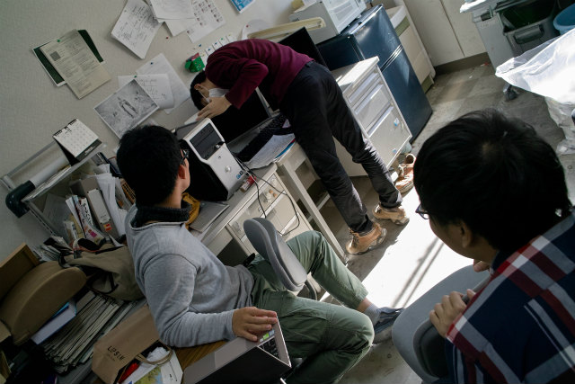
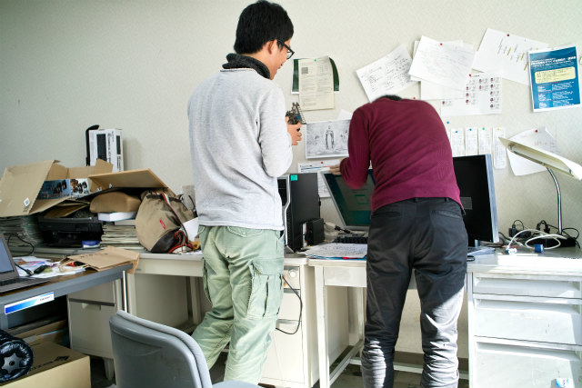

| ・ グラボ逝く (H28.12.06) | |||
M2のY西くん，1週間ぶり2度目のPCトラブル．甲子園みたいになっています．先週はHDDが逝って，今週はグラボが逝く．2画面で写らなくなり，グラボをストックしていたGPU付きに交換．ついでに電源もストックしていた電源に交換しました．やっぱり古いPCからの部品ストックは大事です．この交換で，CPU使用率100%のPIV計算に耐える電源容量倍増と，結果の3次元可視化も古いGPUで少し強化できました．先週はHDDも1TBから3TBに増加したし，来週辺りMBとCPUを代えれば完璧（それはもはや別のPC）． |
|||
|
なにやら騒動 |
片方写らない | ||
|
いろいろ確認 |

液晶はOK,グラボが怪しい | ||
|
ストックのグラボと交換よろしく by 助教の人 |
否認：いや，1画面で研究できます | ||
|
怒り：全然大丈夫！ |
取引：じゃ付けてみますけど | ||
|
抑うつ：どうしよう．．． |
受容：1画面は作業効率落ちるし挿すしか無い | ||
|
タニえもんのサポートもあるし |

見慣れた風景 | ||
|
ウホウホ |
ノリノリ | ||
|
ストックのPC電源に交換 250Wから500Wへ強化 |
古いのを外す | ||
|
TMくんも配線のサポート |
MB，HDD，DVD，CPUの4カ所 | ||
|
GPUはスロット2つ場所を取る |
USB3.0のボードを移動 | ||
|
ケーブル類を繋いで |
認識した！ | ||
|
もう1つ繋ぐ |
バーンと強なる | ||
|
GPUのファンうるさない？ |
修理内容を記入 | ||
|
字汚なっ！ |
タニえもんが部品型番教えてくれる | ||
|
TMくんに記入担当交代 |
記入後蓋を閉めて | ||
|
ストックに混ざるとややこしいので明日の廃棄日に出す |
来週はもう無いよね（フラグ）？ | ||